SAD – závěrečná zkouška · Aplikace OZ II: aktivní filtry – SAD · https://balnerm.github.io/pripravy/sad/zkouska/15_aktivni_filtry.html
Přednáška 5
Aplikace OZ II: aktivní filtry
Biosignál je vždy smíchaný s rušením jiných frekvencí: drift izolinie, síťový brum 50 Hz, šum svalů. Filtr propustí jen pásmo, které nás zajímá. Pasivní RC články (připomenuté níže) mají dvě slabiny: signál vždy zeslabí a strmost jejich charakteristiky je jen 20 dB na dekádu. Aktivní filtr přidá operační zesilovač – filtr pak může zesilovat, články se navzájem nezatěžují a ze dvou rezistorů a dvou kondenzátorů vznikne filtr 2. řádu se strmostí 40 dB na dekádu. Přednáška ukazuje, jak se filtr popisuje (přenosová funkce, řád, strmost, činitel jakosti), standardní zapojení Sallen-Key a MFB pro všechny čtyři typy filtrů a tři aproximace (Butterworth, Čebyšev, Bessel), mezi kterými se při návrhu vybírá.
V akviziční cestě patří filtry do bloku úprava signálu, před analogově-digitální převod. Slide „Úprava signálu“ jmenuje čtyři témata: pasivní filtry, aktivní filtry, antialiasingové filtry a filtry typu DP, HP, PP, PZ. Pojmy ze základů, na které přednáška navazuje – filtr, typy DP, HP, PP, PZ, mezní frekvence, řád a Bodeho graf –, připomíná rámeček níže.
U základních dolních a horních propustí 1. řádu je přenos odvozený krok za krokem. U zapojení 2. řádu (Sallen-Key, MFB, pásmová propust, zádrže) je popsaný princip – proč zapojení filtruje – a co se stane s výstupním signálem, když změním některou součástku.
Připomenutí ze základů: pasivní RC filtry
Přenos, decibel a mezní frekvence jsou připomenuté v P2: přenos \(H = U_\text{výst}/U_\text{vst}\), v decibelech \(20\log_{10}|H|\), na mezní frekvenci \(|H| = 0{,}707\), tj. −3 dB. RC článek je dělič napětí (P1), ve kterém je jeden rezistor nahrazen kondenzátorem.
Analogový filtr je obvod, který propouští složky spojitého signálu v určitém rozsahu frekvencí (propustné pásmo) a potlačuje složky v jiném rozsahu (nepropustné pásmo). Podle polohy propustného pásma rozlišujeme dolní propust, horní propust, pásmovou propust a pásmovou zádrž.
„síto na frekvence“ – co je v propustném pásmu, projde beze změny, co je v nepropustném, se ztlumí. Filtr je pasivní, pokud obsahuje jen R, C (L), a aktivní, pokud obsahuje i zesilovač.

- Dolní propust (DP) propouští frekvence pod mezní frekvencí – v EKG odstraní vysokofrekvenční šum.
- Horní propust (HP) propouští frekvence nad mezní frekvencí – odstraní stejnosměrnou složku a drift izolinie.
- Pásmová propust (PP) propouští jen pásmo mezi dvěma frekvencemi, pásmová zádrž (PZ) jedno pásmo potlačí (např. 50 Hz).
Kapacitní reaktance \(X_C\) je „odpor“ kondenzátoru vůči harmonickému (sinusovému) proudu, tedy poměr amplitud napětí a proudu na kondenzátoru: \(X_C = \frac{1}{2\pi f C} = \frac{1}{\omega C}\). Je nepřímo úměrná frekvenci; proud kondenzátorem předbíhá napětí o 90°.
pro nízké frekvence má kondenzátor obrovský odpor (stejnosměrně = rozpojený obvod), pro vysoké frekvence malý (blíží se zkratu). Právě tato závislost na frekvenci dělá z RC článku filtr.

Dolní propust (low-pass filter) je filtr, který propouští složky signálu s frekvencí nižší než mezní frekvence \(f_c\) a složky s vyšší frekvencí potlačuje. Pasivní dolní propust 1. řádu tvoří rezistor v podélné větvi a kondenzátor v příčné větvi (výstup na kondenzátoru).
pomalé změny projdou, rychlé „zahladí“. Výstup je vyhlazená verze vstupu.
Horní propust (high-pass filter) je filtr, který propouští složky signálu s frekvencí vyšší než mezní frekvence \(f_c\) a složky s nižší frekvencí (včetně stejnosměrné) potlačuje. Pasivní horní propust 1. řádu tvoří kondenzátor v podélné větvi a rezistor v příčné větvi (výstup na rezistoru).
rychlé změny projdou, pomalé a stálé hodnoty se odstraní. V EKG tak zmizí stejnosměrný offset elektrod a pomalé „plavání“ izolinie.
- Nízká frekvence: \(X_C \gg R\), kondenzátor je skoro rozpojený. V DP (výstup na C) je výstup ≈ vstup, v HP (C v podélné větvi) zůstane celé napětí na C a výstup ≈ 0.
- Vysoká frekvence: \(X_C \ll R\), kondenzátor je skoro zkrat. V DP svede signál do země (výstup ≈ 0), v HP signál propustí na R (výstup ≈ vstup).
Výstup se bere z té součástky, na které má zůstat napětí v propustném pásmu. Rezistor omezuje proud, kterým se kondenzátor nabíjí; časová konstanta je \(\tau = RC\).
| \(Z_C\) | impedance kondenzátoru \(1/(j\omega C)\); její velikost je \(X_C\) |
| \(f_c\) | mezní frekvence, stejná pro DP i HP; tam \(X_C = R\) |
| \(|H|\) | DP: 1 → 0,707 v \(f_c\) → \(\approx f_c/f\); HP zrcadlově |
| fáze | DP 0° → −45° v \(f_c\) → −90°; HP +90° → +45° → 0° |
\(R = 10\) kΩ, \(C = 100\) nF.
\[ f_c = \frac{1}{2\pi \cdot 10^4 \cdot 10^{-7}} \approx 159\ \text{Hz} \]Jako dolní propust: signál 1 kHz projde s přenosem
\[ |H| = \frac{1}{\sqrt{1 + (1000/159)^2}} \approx 0{,}157 \] \[ 20 \log_{10} 0{,}157 \approx -16{,}1\ \text{dB} \]Řád filtru je řád přenosové funkce, u pasivních RC filtrů daný počtem kondenzátorů (nezávislých reaktančních prvků). Filtr \(n\)-tého řádu má v nepropustném pásmu sklon amplitudové charakteristiky \(20n\) dB na dekádu.
jeden RC článek = 1. řád = pokles o 20 dB na každý desetinásobek frekvence. Chci-li strmější „hranu“, řadím víc článků (2. řád = 40 dB/dek atd.).
Bodeho graf je zobrazení frekvenční charakteristiky ve dvou grafech nad společnou logaritmickou osou frekvence: amplitudová charakteristika v decibelech (\(20\log_{10}|H|\)) a fázová charakteristika ve stupních.
díky logaritmům na obou osách se z křivek stanou téměř přímky, které jde nakreslit od ruky – stačí znát mezní frekvenci a sklon.

- Kreslení: logaritmická osa frekvence, asymptota 0 dB do \(f_c\), pak přímka −20 dB/dekádu (1. řád).
- Skutečná křivka je v \(f_c\) o 3 dB pod zlomem a fáze tam je −45°; dekádu od zlomu splývá s asymptotami.
- Horní propust zrcadlově: zleva stoupá +20 dB/dek až do \(f_c\), pak 0 dB.
Filtr a jeho přenosová funkce
Podle slidu je filtr obvod, který propouští signál v požadovaném frekvenčním pásmu, zatímco signály nežádoucích frekvencí jsou potlačovány. Ideální přenosové charakteristiky filtrů \(|\bar H(j\omega)|\) mají ostrý zlom amplitudové charakteristiky a maximální strmost poklesu na okraji propustného kmitočtového pásma (\(\omega_0\)) – na slidu jsou nakreslené jako „obdélníky“ pro DP, HP, PP a PZ (stejný tvar jako v připomenutí výše, jen se svislými hranami).
Přenosová funkce \(H(p)\) je podíl výstupního a vstupního napětí v operátorovém tvaru. Obecně je to podíl dvou polynomů v proměnné \(p = j\omega\) s reálnými koeficienty \(c\) a \(b\), přičemž stupeň čitatele \(m\) není větší než stupeň jmenovatele \(n\):
\[ H(p) = \frac{U_o(p)}{U_i(p)} = \frac{c_m p^m + \dots + c_1 p + c_0}{b_n p^n + \dots + b_1 p + b_0} \]
vzorec, který o filtru říká všechno. Dosadím-li \(p = j\omega\), dostanu komplexní číslo: jeho velikost je zesílení na frekvenci \(\omega\), jeho úhel fázový posun. Stupeň jmenovatele \(n\) je řád filtru.
V ustáleném stavu (tedy mimo přechodové děje) se přenos rozloží na velikost a fázi:
\[ \bar H(j\omega) = |\bar H(j\omega)| \cdot e^{j\varphi(\omega)} \]| \(U_o(p)\), \(U_i(p)\) | výstupní a vstupní napětí v operátorovém tvaru |
| \(p = j\omega\) | komplexní proměnná; v ustáleném harmonickém stavu je to \(j\) krát úhlová frekvence |
| \(c_i\), \(b_i\) | reálné koeficienty dané součástkami filtru; \(m \le n\) |
| \(|\bar H(j\omega)|\) | modul přenosové funkce – frekvenční (amplitudová) charakteristika |
| \(\varphi(\omega)\) | frekvenční fázová charakteristika; \(\omega = 2\pi f\) |
Ideální a reálný filtr
Ideální filtr má v propustném pásmu přenos beze změny (\(A = 1\)), na mezní frekvenci \(\omega_0\) absolutní strmost a za mezní frekvencí nulový přenos. Odpovídá filtru nekonečného řádu, \(n \to \infty\).
dokonalé „síto“: všechno pod \(\omega_0\) projde beze změny, nic nad \(\omega_0\) neprojde. Takový filtr nejde postavit – každý skutečný filtr má mezi propouštěním a potlačením přechod.
Amplitudová charakteristika reálného filtru má tři části. Pásmo propustnosti sahá k mezní frekvenci \(\omega_0\), kde přenos neklesne pod \(A_1\). Pásmo útlumu začíná na frekvenci \(\omega_1\), od které přenos nepřekročí \(A_2\). Mezi nimi leží přechodová oblast, kde přenos postupně klesá; nemá absolutní strmost.
„tolerance“ filtru. Čím menší je přechodová oblast (\(\omega_1\) blíž \(\omega_0\)), tím je filtr lepší, ale potřebuje vyšší řád.
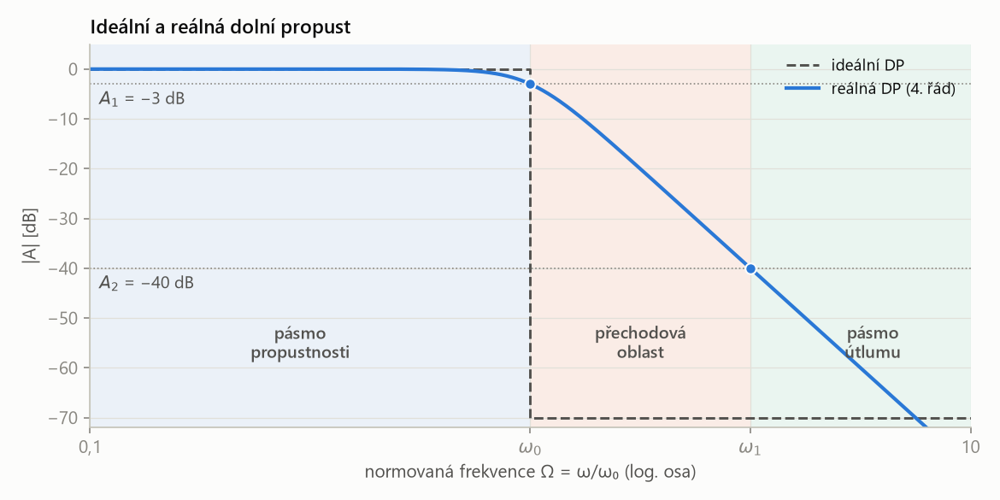
- Ideální filtr (čárkovaně) je „schod“: přenos 1 (0 dB) a za \(\omega_0\) okamžitě nula.
- Reálný filtr má na mezní frekvenci pokles 3 dB a za ní klesá konečnou strmostí. Mezi \(\omega_0\) a \(\omega_1\) je přechodová oblast – signál tam už není propuštěn celý, ale ještě není dost potlačen.
- Podle slidu se v praxi používají řády \(n\) = 2, 3, 6, nejvýš asi 10; v propustném pásmu je přenos \(A \cong 1\).
Řád filtru a strmost charakteristiky
Za mezní frekvencí přenos klesá tím rychleji, čím vyšší je řád filtru. Rychlost poklesu se udává ve dvou jednotkách: v decibelech na oktávu nebo na dekádu.
Strmost charakteristiky filtru je změna přenosu (v dB) v nepropustném pásmu na jednotku logaritmu frekvence. Udává se v dB na oktávu (dB/okt, změna při zdvojnásobení nebo zpoložení frekvence) nebo v dB na dekádu (dB/dek, změna při desetinásobné nebo desetinové frekvenci). Filtr \(n\)-tého řádu má strmost \(n \cdot 6\) dB/okt, tedy \(n \cdot 20\) dB/dek.
jak prudký je „sráz“ za mezní frekvencí. 1. řád: o oktávu dál je signál zhruba poloviční (−6 dB), o dekádu dál desetinový (−20 dB). Každý další řád přidá stejný kus.
Dekáda je frekvenční interval, ve kterém se frekvence zdesetinásobí, resp. klesne na desetinu (\(f \to 10f\) nebo \(f \to f/10\)).
jeden „dílek“ na logaritmické ose: 10 Hz → 100 Hz → 1 kHz. Oktáva (P4) je menší krok – dvojnásobek frekvence; do jedné dekády se vejde asi 3,3 oktávy.
Příklad ze slidů: horní propust s \(f_M\) = 1,8 kHz
Slidy vysvětlují oktávu a dekádu na horní propusti s mezní frekvencí \(f_M\) = 1,8 kHz. Pro horní propust leží nepropustné pásmo pod mezní frekvencí, takže „o oktávu dál“ znamená poloviční frekvenci: 900 Hz, 450 Hz…, „o dekádu dál“ desetinovou: 180 Hz, 18 Hz.
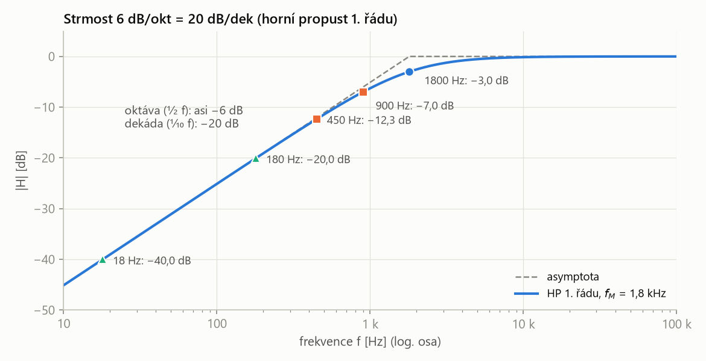
- Daleko od mezní frekvence je křivka přímka se sklonem 6 dB/okt = 20 dB/dek: 180 Hz → −20 dB, 18 Hz → −40 dB.
- Těsně u mezní frekvence se skutečná křivka od asymptoty odchyluje: v \(f_M\) je −3 dB, o oktávu níž −7 dB (asymptota −6 dB), o dvě oktávy níž −12,3 dB (asymptota −12 dB).
Přenos horní propusti 1. řádu (připomenutí výše):
\[ |H| = \frac{f/f_M}{\sqrt{1 + (f/f_M)^2}} \]1. Oktáva pod mezní frekvencí, \(f\) = 900 Hz, \(f/f_M = 0{,}5\):
\[ |H| = \frac{0{,}5}{\sqrt{1{,}25}} = 0{,}447 \;\Rightarrow\; -6{,}99\ \text{dB} \]2. Dvě oktávy, \(f\) = 450 Hz, \(f/f_M = 0{,}25\):
\[ |H| = \frac{0{,}25}{\sqrt{1{,}0625}} = 0{,}243 \;\Rightarrow\; -12{,}30\ \text{dB} \]3. Dekáda a dvě dekády: 180 Hz → −20,04 dB, 18 Hz → −40,00 dB.
- Strmost 6 dB/okt = 20 dB/dek má filtr 1. řádu (jeden RC článek, řád filtru). Filtr 2. řádu má 12 dB/okt = 40 dB/dek, 3. řádu 18 dB/okt = 60 dB/dek.
- 3 dB je pokles v mezní frekvenci (tím je mezní frekvence definovaná). 6 dB/okt (krát řád) je strmost daleko za ní. Nepleť si je: o oktávu za mezní frekvencí není 1. řád na −6 dB, ale na −7,0 dB, o dvě oktávy na −12,3 dB (příklad výše).
- Asymptota (přímka 6 dB/okt) dává 0 / −6 / −12 dB, skutečná křivka −3,0 / −7,0 / −12,3 dB. Čím dál od mezní frekvence, tím víc se obě shodují (o dekádu −20,04 dB, o dvě dekády −40,00 dB).
Přepočet mezi dB/oktávu a dB/dekádu
| \(A_\text{dek}\) | strmost v dB na dekádu |
| \(A_\text{okt}\) | strmost v dB na oktávu |
| \(\log_2 10 \approx 3{,}3219\) | kolik oktáv se vejde do jedné dekády (\(2^{3{,}32} = 10\)) |
1. Filtr se strmostí 3 dB/okt:
\[ A_\text{dek} = 3{,}3219 \cdot 3 = 9{,}97\ \text{dB/dek} \approx 10\ \text{dB/dek} \]2. Filtr se strmostí 6 dB/okt:
\[ A_\text{dek} = 3{,}3219 \cdot 6 = 19{,}93\ \text{dB/dek} \approx 20\ \text{dB/dek} \]3. Přesně: „6 dB“ jsou ve skutečnosti \(20 \log_{10} 2 = 6{,}0206\) dB a „3 dB“ jsou \(20\log_{10}\sqrt 2 = 3{,}0103\) dB (slide: „3 dB nejsou 3, ale 3,010299…“). S nimi vychází přesně 20 dB/dek:
\[ 3{,}3219 \cdot 6{,}0206 = 20{,}00\ \text{dB/dek} \]V praxi se zaokrouhluje: 3 dB/okt ≈ 10 dB/dek, 6 dB/okt ≈ 20 dB/dek.
Pasivní a aktivní, analogové a digitální filtry
Pasivní filtr je tvořen jen pasivními obvodovými prvky (R, L, C), přinejmenším jedním prvkem s reaktancí, tedy prvkem s frekvenční závislostí (L, C).
RC nebo LC článek bez zesilovače. Nepotřebuje napájení, ale signál může jen zeslabit.
Aktivní filtr používá kromě pasivních obvodových prvků i aktivní prvky, především operační zesilovače. Vyžaduje externí zdroj energie (napájení OZ \(\pm U_{CC}\)).
RC článek „obalený“ operačním zesilovačem. OZ dodá energii, takže filtr může signál i zesílit, a díky zpětné vazbě dosáhne RC zapojení stejné strmosti jako cívky.
| pasivní filtr | aktivní filtr | |
|---|---|---|
| prvky | R, L, C | R, C a OZ (induktory nepotřebuje, postačují RC) |
| napájení | nepotřebuje | potřebuje externí zdroj (\(\pm U_{CC}\) OZ) |
| amplituda signálu | vždy snižuje amplitudu procházejícího signálu | může signál současně i zesilovat |
| frekvenční rozsah | teoreticky neomezený – není limitován parametry aktivních prvků (T, OZ) | omezený vlastnostmi OZ (GBW, slew rate) |
| rozměry, strmost | cívky jsou velké a těžké | kompaktnější; umožňuje ostřejší strmost na krajích pásma |
Slidy ukazují oba typy jako dolní propust 2. řádu: pasivní LC článek (cívka \(L\) a rezistor \(R\) v sérii, kondenzátor \(C\) na zem) a aktivní zapojení Sallen-Key se dvěma rezistory, dvěma kondenzátory a OZ (níže).
- Zisk: OZ dodává energii z napájení, takže filtr může signál v propustném pásmu zesílit. Pasivní článek ho vždy jen zeslabí.
- Oddělení (impedanční): OZ má velký vstupní a malý výstupní odpor. Filtr nezatěžuje zdroj signálu, další stupeň nezatěžuje filtr a přenos nezávisí na tom, co je připojeno za ním. Proto jdou články řadit za sebe a počítat každý zvlášť (kaskáda).
- Náhrada cívky: dva RC články za sebou dají pasivně jen „líný“ filtr 2. řádu s \(Q < 0{,}5\) (ohyb je pozvolný). Ostrý ohyb jako u LC článku (\(Q \ge 0{,}5\), rezonance) dá RC zapojení až se zpětnou vazbou z výstupu OZ – ta kolem mezní frekvence signál „podpoří“ a nahradí tím chování cívky.
- Cena: potřebuje napájení a pracuje jen do frekvencí, které zvládne OZ (GBW, slew rate); výstup nepřekročí napájecí napětí.
Analogové vs. digitální filtry
- Aktivní analogové filtry nemohou být svými parametry obrazem ideálních filtrů.
- Praktický návrh analogového filtru se proto obvykle zaměřuje na optimalizaci zvoleného kritéria – např. na linearizaci (fázové) charakteristiky, nebo strmost přechodu (to jsou aproximace níže).
- U zařízení s digitálním zpracováním signálu je vhodné (i výhodné) přenechat maximum operací se signálem do digitální oblasti. Analogový filtr pak dělá jen to, co digitálně udělat nejde – hlavně antialiasingovou filtraci před A/D převodníkem (doplnění, viz definice níže).
Základní popis: normovaná frekvence a koeficienty
Slide „Základní popis“ ukazuje, jak se přenos zapisuje tak, aby nezávisel na konkrétní mezní frekvenci. Výchozí je RC dolní propust z připomenutí na začátku kapitoly:
\[ A(s) = \frac{\frac{1}{RC}}{s + \frac{1}{RC}} = \frac{1}{1 + sRC} \]Normovaná frekvence \(\Omega\) je frekvence vztažená k mezní frekvenci filtru:
\[ \Omega = \frac{f}{f_c} = \frac{\omega}{\omega_c} \]
Normovaná komplexní proměnná je \(s = j\omega/\omega_c = j\Omega\).
místo „kolik je to hertzů“ se ptám „kolikrát je to nad mezní frekvencí“. Mezní frekvence je pak vždy \(\Omega = 1\) a jeden graf platí pro filtr na 10 Hz i na 10 kHz.
| \(s = j\Omega\) | normovaná komplexní frekvence |
| \(\Omega = f/f_c\) | normovaná frekvence; \(\Omega = 1\) je mezní frekvence (\(|A| = 1/\sqrt2\), −3 dB) |
| \(|A|\) | modul přenosu (zisk) |
Dolní propust:
\[ A(s) = \frac{A_0}{1 + a_1 s + b_1 s^2} \]Horní propust (záměna \(s \to 1/s\)):
\[ A(s) = \frac{A_\infty}{1 + \frac{a_1}{s} + \frac{b_1}{s^2}} \]| \(A_0\) | zisk dolní propusti v propustném pásmu (pro \(f \to 0\)) |
| \(A_\infty\) | zisk horní propusti v propustném pásmu (pro \(f \to \infty\)) |
| \(a_1\), \(b_1\) | koeficienty článku; článek 1. řádu má \(b_1 = 0\). Hodnoty určuje aproximace (tabulky), součástky se pak dopočítají ze vzorců pro konkrétní zapojení |
Filtr vyššího řádu je kaskáda takových článků: přenosy se násobí, každý článek \(i\) má svoje \(a_i\), \(b_i\).
Činitel jakosti \(Q\) popisuje, jak výrazný „hrb“ má článek 2. řádu kolem mezní frekvence. Pro dolní nebo horní propust 2. řádu je
\[ Q = \frac{\sqrt{b_1}}{a_1} \]
a pro pásmovou propust nebo zádrž je to poměr střední frekvence a šířky pásma:
\[ Q = \frac{f_m}{B} \]
„ostrost“ filtru. U pásmové propusti či zádrže znamená velké \(Q\) úzké pásmo (\(Q\) = 10 propustí jen desetinu \(f_m\)). U dolní propusti malé \(Q\) dá pozvolný ohyb, velké \(Q\) převýšení před zlomem.
Aktivní dolní propust
Dolní propust 1. řádu
Slide „Aktivní filtr – DP 1. řádu“ ukazuje dvě zapojení. Obě jsou RC článek 1. řádu doplněný OZ, který určuje zisk \(A_0\).
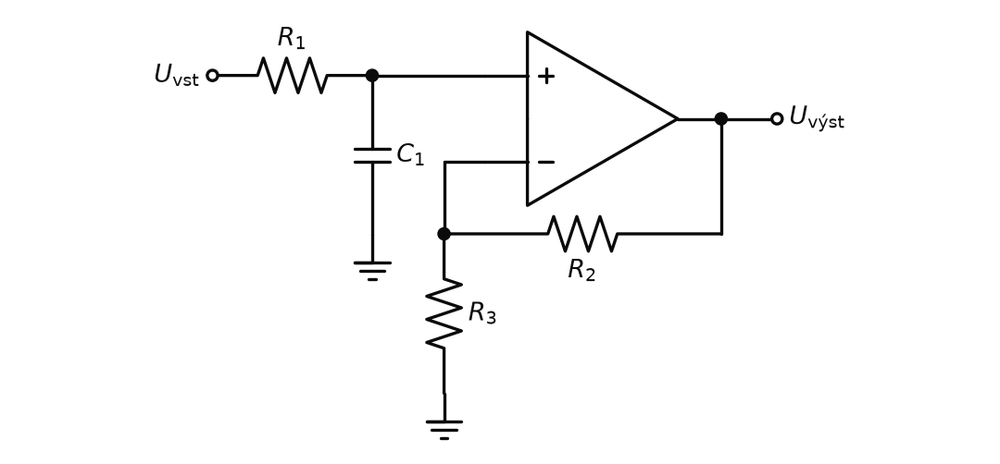
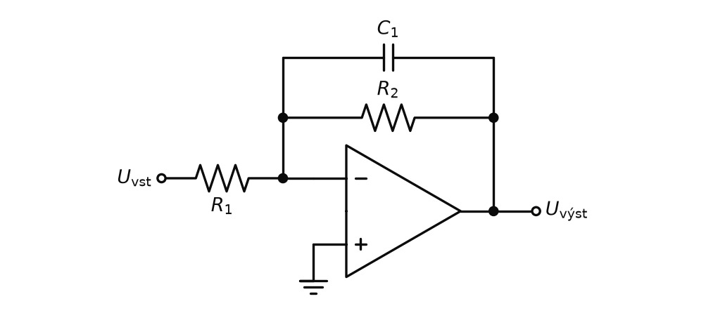
Neinvertující (obr. P5.3):
\[ A_0 = 1 + \frac{R_2}{R_3}, \qquad a_1 = \omega_c R_1 C_1 \]Invertující (obr. P5.4):
\[ A_0 = -\frac{R_2}{R_1}, \qquad a_1 = \omega_c R_2 C_1 \]| \(A_0\) | zisk v propustném pásmu |
| \(a_1\) | koeficient článku; pro samostatný filtr 1. řádu \(a_1 = 1\) |
| \(\omega_c = 2\pi f_c\) | mezní úhlová frekvence |
| \(R_1 C_1\), resp. \(R_2 C_1\) | časová konstanta, která určuje mezní frekvenci |
Počítáme s operátorovou proměnnou \(p = j\omega\); impedance kondenzátoru je \(1/(pC)\). Na konci dosadíme \(p = s\,\omega_c\) (normovaný tvar).
Neinvertující (obr. P5.3) = dělič \(R_1 C_1\) a za ním neinvertující zesilovač.
1. Napětí na neinvertujícím vstupu (do vstupu OZ neteče proud, dělič je nezatížený):
\[ U_+ = U_i \cdot \frac{\frac{1}{pC_1}}{R_1 + \frac{1}{pC_1}} = \frac{U_i}{1 + pR_1C_1} \]2. Neinvertující zesilovač ho zesílí:
\[ U_o = \left(1 + \frac{R_2}{R_3}\right) U_+ \]3. Přenos:
\[ A(p) = \frac{1 + R_2/R_3}{1 + pR_1C_1} = \frac{A_0}{1 + s\,\omega_c R_1 C_1} \]Invertující (obr. P5.4) = invertující zesilovač, jen místo \(R_2\) je ve zpětné vazbě \(R_2 \parallel C_1\).
1. Impedance zpětné vazby:
\[ Z_2 = \frac{R_2 \cdot \frac{1}{pC_1}}{R_2 + \frac{1}{pC_1}} = \frac{R_2}{1 + pR_2C_1} \]2. Zisk invertujícího zesilovače \(-Z_2/R_1\):
\[ A(p) = -\frac{R_2/R_1}{1 + pR_2C_1} = \frac{A_0}{1 + s\,\omega_c R_2 C_1} \]Porovnáním se vzorem \(A_0/(1 + a_1 s)\) dostaneme \(A_0\) a \(a_1\) z rámečku výše.
V invertujícím zesilovači je zisk \(-Z_2/R_1\). Pro nízké frekvence je kondenzátor \(C_1\) rozpojený, ve zpětné vazbě je jen \(R_2\) a zisk je \(-R_2/R_1\). Pro vysoké frekvence kondenzátor zpětnou vazbu „zkratuje“, \(Z_2 \to 0\) a zisk klesá. Zlom nastane tam, kde \(X_C = R_2\), proto v \(a_1\) vystupuje \(R_2 C_1\).
Pro filtr 1. řádu je \(a_1 = 1\), tedy \(R_1 C_1 = 1/\omega_c\). Zvolíme \(C_1\) = 10 nF:
\[ R_1 = \frac{1}{2\pi f_c C_1} = \frac{1}{2\pi \cdot 1000 \cdot 10^{-8}} = 15{,}9\ \text{k}\Omega \]Zisk \(A_0 = 2\) neinvertujícího zapojení:
\[ 1 + \frac{R_2}{R_3} = 2 \;\Rightarrow\; R_2 = R_3 = 10\ \text{k}\Omega \]Invertující varianta se ziskem −1: \(R_2 = 15{,}9\) kΩ (z \(a_1 = \omega_c R_2 C_1 = 1\)) a \(R_1 = R_2 = 15{,}9\) kΩ.
Dolní propust typu Sallen-Key
Sallen-Key je zapojení aktivního filtru 2. řádu se dvěma rezistory, dvěma kondenzátory a OZ zapojeným jako sledovač (nebo neinvertující zesilovač). Jeden reaktanční prvek vede na zem z neinvertujícího vstupu, druhý vede kladnou zpětnou vazbu z výstupu do uzlu mezi oběma vstupními prvky.
dva RC články za sebou, ale druhý kondenzátor (u DP) není na zemi – je připojen k výstupu. Výstup tak „pomáhá“ signálu kolem mezní frekvence a charakteristika se v ohybu zostří. Zisk je kladný (neinvertující).
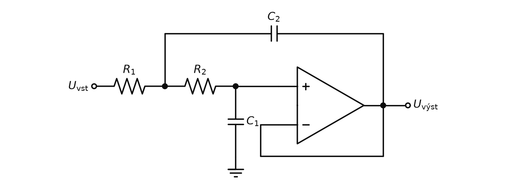
- Nízké frekvence: oba kondenzátory jsou „rozpojené“, signál projde přes \(R_1\), \(R_2\) na sledovač beze změny – zisk 1.
- Vysoké frekvence: \(C_1\) zkratuje neinvertující vstup na zem – výstup je nulový. Dva RC články za sebou dávají 40 dB/dek.
- Kolem mezní frekvence: kdyby \(C_2\) vedl na zem, odváděl by signál z uzlu mezi \(R_1\) a \(R_2\) a ohyb by byl pozvolný jako u dvou pasivních RC článků. \(C_2\) je ale připojen na výstup, který kopíruje napětí \(U_+\). Výstup tak přes \(C_2\) vrací signál zpět do uzlu, „drží“ jeho napětí nahoře a oddálí pokles. To je ta kladná zpětná vazba, která z pozvolného ohybu udělá ostrý.
- Výstup je v propustném pásmu stejně velký jako vstup a ve stejné fázi (zisk 1, neinvertující). Za mezní frekvencí klesá 40 dB/dek.
- Všechny R (nebo všechna C) větší: mezní frekvence klesne (dvojnásobné hodnoty → poloviční \(f_c\)), tvar křivky zůstane stejný – celá charakteristika se jen posune po ose frekvence.
- Větší \(C_2\) proti \(C_1\): silnější kladná zpětná vazba → ostřejší ohyb (větší \(Q\)); při velkém poměru se před zlomem objeví převýšení – výstup je kolem mezní frekvence větší než vstup. Menší poměr dá pozvolný ohyb. Butterworth (nejplošší průběh) vyjde pro \(C_2 = 2C_1\) a stejné rezistory.
- Varianta se ziskem (OZ jako neinvertující zesilovač s \(R_3\), \(R_4\)): zvětšení zisku zesílí i kladnou zpětnou vazbu – výstup je větší, ohyb ostřejší a roste převýšení. Při zisku 3 a víc (se stejnými součástkami) se obvod rozkmitá a přestane filtrovat.
Tabulka ze slidu dává koeficienty pro filtr 2. řádu podle tří aproximací:
| 2. řád | Bessel | Butterworth | Čebyšev 3 dB |
|---|---|---|---|
| \(a_1\) | 1,3617 | 1,4142 | 1,065 |
| \(b_1\) | 0,618 | 1 | 1,9305 |
| \(Q\) | 0,58 | 0,71 | 1,3 |
| \(R_4/R_3\) | 0,268 | 0,586 | 1,234 |
Řádek \(R_4/R_3\) patří k variantě Sallen-Key se stejnými součástkami (\(R_1 = R_2\), \(C_1 = C_2\)), u které se tvar charakteristiky nastavuje jen ziskem neinvertujícího zesilovače (dělič \(R_3\), \(R_4\) jako u HP Sallen-Key). Čím větší požadované \(Q\), tím větší poměr \(R_4/R_3\), tedy větší zisk: Bessel 0,268, Butterworth 0,586, Čebyšev 1,234.
Zapojení se ziskem 1 (obr. P5.5) žádné \(R_3\), \(R_4\) nemá – tam se \(Q\) nastavuje poměrem kondenzátorů.
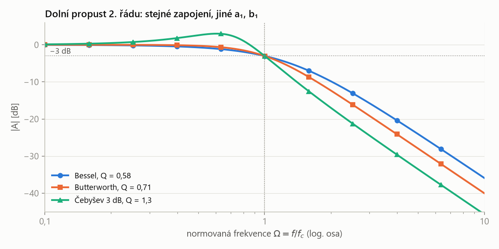
- Zapojení je pořád stejné (obr. P5.5) – liší se jen hodnoty součástek, a tím \(a_1\), \(b_1\) a \(Q\).
- Malé \(Q\) (Bessel 0,58): pozvolný ohyb. \(Q = 0{,}71\) (Butterworth): nejplošší propustné pásmo. Velké \(Q\) (Čebyšev 1,3): převýšení asi 3 dB před zlomem, ale nejstrmější pokles hned za ním.
- Všechny tři mají v \(\Omega = 1\) pokles 3 dB a daleko za zlomem stejnou strmost 40 dB/dek (2. řád).
Dolní propust typu MFB
MFB (Multiple FeedBack, vícenásobná zpětná vazba) je zapojení aktivního filtru 2. řádu s OZ v invertujícím zapojení, ve kterém vedou z výstupu dvě zpětné vazby: jedna na invertující vstup a druhá do uzlu mezi vstupními prvky.
invertující zesilovač se dvěma zpětnými vazbami. Zisk je záporný (signál se otočí), zapojení je málo citlivé na tolerance součástek a hodí se i pro velké \(Q\) (pásmové propusti).
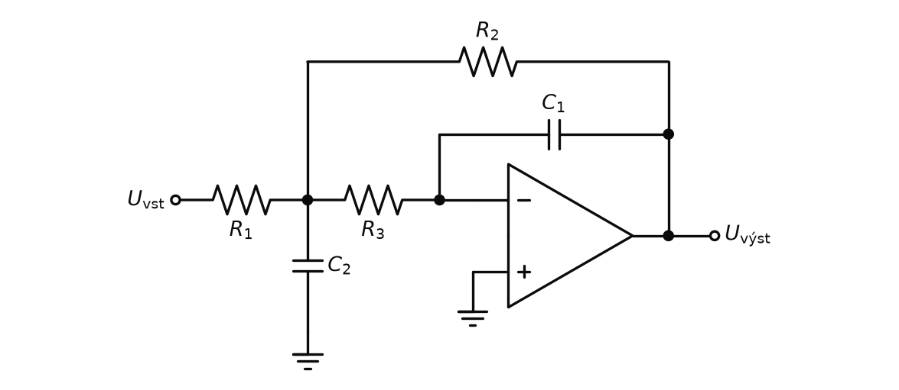
- Kostra je invertující zesilovač \(R_1\) → \(R_2\): zisk je daný poměrem \(R_2\) a \(R_1\) a je záporný. Na nízkých frekvencích jsou kondenzátory rozpojené a zbude jen on.
- První filtrační článek: \(R_1\) a \(C_2\) na zem tvoří RC dolní propust – na vysokých frekvencích \(C_2\) uzel uzemní.
- Druhý článek: \(R_3\) s \(C_1\) ve zpětné vazbě je invertující integrátor / DP 1. řádu – na vysokých frekvencích \(C_1\) zkratuje výstup na virtuální zem.
- Dvě zpětné vazby: \(C_1\) (na invertující vstup) a \(R_2\) (z výstupu zpět do uzlu). Smyčka uzel → integrátor → \(R_2\) → uzel posouvá fázi tak, že kolem mezní frekvence vznikne mírná rezonance (jako u LC článku). Proto je ohyb ostrý a ne pozvolný jako u dvou pasivních RC článků.
- Výstup je v propustném pásmu otočený o 180° (invertovaný) a zesílený poměrem \(R_2/R_1\); za mezní frekvencí klesá 40 dB/dek.
- \(R_1\) menší (nebo \(R_2\) větší): výstup je větší. Protože \(R_1\) a \(R_2\) jsou zároveň součástí filtru, posune se trochu i tvar ohybu.
- Větší \(C_2\) proti \(C_1\): ostřejší ohyb (větší \(Q\)), případně převýšení před zlomem; menší poměr = pozvolnější ohyb.
- Všechny R nebo všechna C větší: mezní frekvence klesne, tvar zůstane.
| Sallen-Key | MFB | |
|---|---|---|
| OZ | neinvertující (sledovač) | invertující, neinvertující vstup na zemi |
| zisk | kladný, nejsnáz 1 | záporný, \(-R_2/R_1\) – zisk je „zadarmo“ |
| zpětná vazba | jedna, kladná | dvě (proto „multiple feedback“) |
| citlivost na součástky | větší, hlavně při zisku blízko 3 | menší, snese i vyšší \(Q\) |
| vstupní odpor | velký (do OZ neteče proud) | daný \(R_1\) (virtuální zem) |
Aktivní horní propust
Slide „Pásmová propust“ ukazuje šipkou (⇒), jak z dolní propusti Sallen-Key vznikne horní: rezistory se nahradí kondenzátory a kondenzátory rezistory. V přenosu to odpovídá záměně \(s \to 1/s\): co dolní propust propouštěla na nízkých frekvencích, propouští horní propust na vysokých. Platí to pro všechna zapojení – 1. řádu, Sallen-Key i MFB.
Horní propust 1. řádu
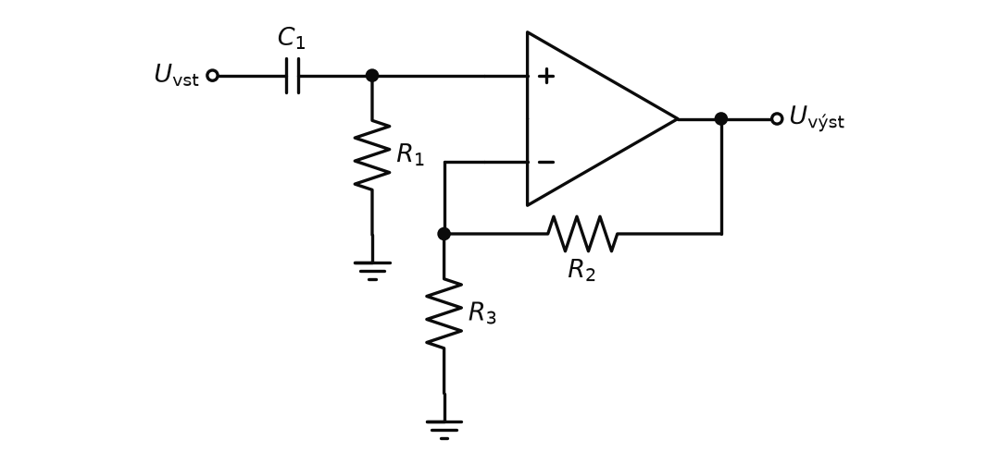
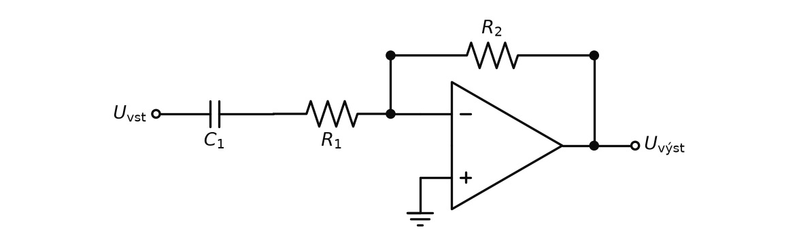
Neinvertující (obr. P5.8):
\[ A_\infty = 1 + \frac{R_2}{R_3} \]Invertující (obr. P5.9):
\[ A_\infty = -\frac{R_2}{R_1} \]Obě varianty:
\[ a_1 = \frac{1}{\omega_c R_1 C_1} \]| \(A_\infty\) | zisk v propustném pásmu (vysoké frekvence) |
| \(a_1\) | koeficient článku; pro samostatný filtr 1. řádu \(a_1 = 1\), tedy \(\omega_c = 1/(R_1 C_1)\) |
| \(R_1 C_1\) | časová konstanta vstupního článku |
Stejně jako u DP, jen si \(R_1\) a \(C_1\) vymění místa.
Neinvertující (obr. P5.8): dělič \(C_1\) – \(R_1\) a za ním zesilovač:
\[ U_+ = U_i \cdot \frac{R_1}{R_1 + \frac{1}{pC_1}} = \frac{U_i}{1 + \frac{1}{pR_1C_1}} \] \[ A(p) = \frac{1 + R_2/R_3}{1 + \frac{1}{pR_1C_1}} \]Invertující (obr. P5.9): na vstupu je místo \(R_1\) impedance \(Z_1 = R_1 + \frac{1}{pC_1}\):
\[ A(p) = -\frac{R_2}{Z_1} = -\frac{R_2/R_1}{1 + \frac{1}{pR_1C_1}} \]Po dosazení \(p = s\,\omega_c\) je v obou případech \(\frac{1}{pR_1C_1} = \frac{1}{\omega_c R_1 C_1} \cdot \frac{1}{s}\), tedy \(a_1 = \frac{1}{\omega_c R_1 C_1}\).
\(f_c\) = 0,5 Hz, \(C_1\) = 1 µF:
\[ R_1 = \frac{1}{2\pi \cdot 0{,}5 \cdot 10^{-6}} = 318\ \text{k}\Omega \]Zisk \(A_\infty = 10\) neinvertující variantou, \(R_3\) = 1 kΩ:
\[ 1 + \frac{R_2}{R_3} = 10 \;\Rightarrow\; R_2 = 9\ \text{k}\Omega \]Pasivní článek by EKG jen propustil; aktivní ho zároveň desetkrát zesílí a OZ odděluje filtr od další zátěže.
Horní propust typu Sallen-Key
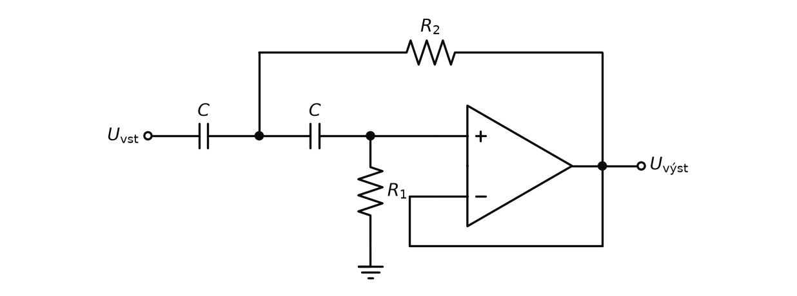
HP na obr. P5.10 vznikne z DP na obr. P5.5 výměnou prvků:
- podélné \(R_1\), \(R_2\) (DP) → dva kondenzátory \(C\) (HP),
- \(C_1\) na zem (DP) → \(R_1\) na zem (HP),
- \(C_2\) na výstup (DP) → \(R_2\) na výstup (HP).
Princip je zrcadlový. Na vysokých frekvencích jsou kondenzátory „zkrat“ a signál projde na sledovač beze změny. Na nízkých jsou rozpojené a signál neprojde. Kolem mezní frekvence vrací výstup přes \(R_2\) signál do uzlu mezi kondenzátory (kladná zpětná vazba) a ohyb se zostří.
- Výstup je ve vysokých frekvencích stejný jako vstup (zisk 1, ve fázi); pod mezní frekvencí klesá 40 dB/dek – nízké složky (např. drift izolinie) jsou potlačeny.
- Větší R nebo větší C: mezní frekvence klesne, propustí se i nižší frekvence; tvar zůstane.
- Poměr rezistorů určuje ostrost ohybu: větší \(R_1\) (na zem) proti \(R_2\) (na výstup) = silnější kladná zpětná vazba = ostřejší ohyb, případně převýšení (zrcadlově k poměru kondenzátorů u DP).
- Obecná varianta se ziskem (slide vlevo, neinvertující zesilovač \(R_3\), \(R_4\), různé \(C_1\), \(C_2\)): větší zisk = větší výstup a zároveň silnější kladná zpětná vazba → ostřejší ohyb a převýšení u mezní frekvence. Mezní frekvenci zisk nemění. Při příliš velkém zisku (u stejných součástek 3 a víc) se filtr rozkmitá.
Horní propust typu MFB
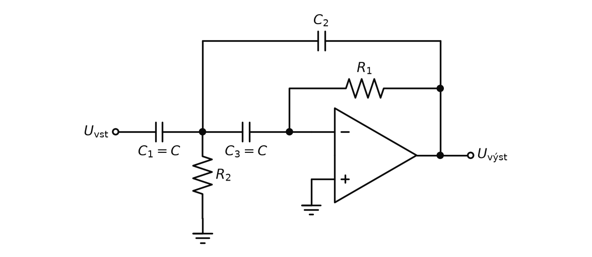
Je to DP MFB (obr. P5.7) s prohozenými R a C: vstupní kondenzátor \(C\) do uzlu, z uzlu \(R_2\) na zem, \(C_2\) na výstup a druhý \(C\) na invertující vstup; \(R_1\) mezi invertujícím vstupem a výstupem.
- Nízké frekvence: kondenzátory jsou rozpojené, signál k OZ neprojde – výstup je nulový.
- Vysoké frekvence: kondenzátory vedou a zapojení se chová jako invertující zesilovač, jen místo rezistorů v něm „rozhodují“ kondenzátory.
- Výstup je v propustném pásmu (vysoké frekvence) invertovaný; pod mezní frekvencí klesá 40 dB/dek.
- Zisk neurčuje poměr odporů, ale poměr kondenzátorů – vstupního \(C\) proti zpětnovazebnímu \(C_2\). Menší \(C_2\) = větší výstup.
- Větší \(R_1\), \(R_2\) nebo větší kondenzátory: mezní frekvence klesne.
- Poměr rezistorů určuje ostrost ohybu: větší \(R_1\) (zpětná vazba) proti \(R_2\) (na zem) = ostřejší ohyb (zrcadlově k poměru kondenzátorů u DP MFB).
Pásmová propust
Připomenutí ze základů: pasivní pásmová propust
Pásmová propust (band-pass filter) je filtr, který propouští složky signálu s frekvencemi mezi dolní mezní frekvencí \(f_d\) a horní mezní frekvencí \(f_h\) a potlačuje frekvence pod \(f_d\) i nad \(f_h\). Šířka pásma je \(B = f_h - f_d\).
„okno“ ve frekvencích – propustí jen pásmo, ve kterém je užitečný signál (EKG asi 0,05–150 Hz), a ořízne drift i šum zároveň.

| \(f_d\), \(f_h\) | dolní a horní mezní frekvence (z HP a z DP); musí být \(f_d < f_h\) |
| \(B\) | šířka pásma [Hz] |
| \(f_0\) | střední frekvence – geometrický průměr |
Přenosy článků se násobí (v dB sčítají). Pozor na zatěžování: druhý článek je zátěží prvního (jako zatížený dělič), proto se články oddělují sledovačem – nebo se použije aktivní filtr.
Pásmovou propust lze chápat jako překryv dolní a horní propusti (slide ukazuje graf, kde se charakteristiky DP se ziskem \(A_0\) a HP se ziskem \(A_\infty\) protínají v \(\Omega = 1\)). Pro širokou propust stačí horní a dolní propust za sebou (připomenutí výše). Úzká propust se navrhuje transformací dolní propusti: charakteristika DP s mezní frekvencí \(\Omega = 1\) se „zrcadlí“ kolem střední frekvence \(\Omega_m = 1\) a z jejího propustného pásma vznikne pásmo šířky \(\Delta\Omega\) (obrázek na slidu).
| \(\Omega_1\), \(\Omega_2\) | normovaná dolní a horní mezní frekvence (−3 dB pod vrcholem) |
| \(\Delta\Omega\) | normovaná šířka pásma |
| \(\Omega_m = 1\) | normovaná střední frekvence; leží uprostřed na logaritmické ose, proto \(\Omega_1 \Omega_2 = 1\) |
| \(f_m\), \(B\) | střední frekvence a šířka pásma v Hz, \(B = f_2 - f_1\) |
| \(Q\) | činitel jakosti – čím větší, tím užší pásmo |
Pásmová propust MFB
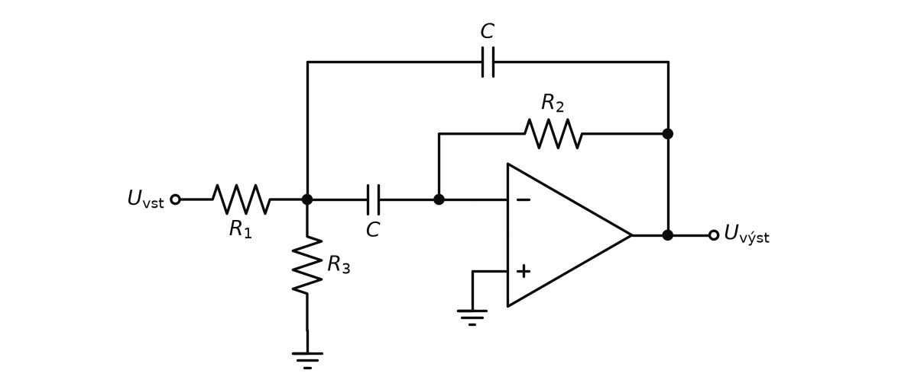
- Nízké frekvence: kondenzátor mezi uzlem a invertujícím vstupem je rozpojený – signál se k OZ vůbec nedostane, výstup je nulový (horní propust).
- Vysoké frekvence: oba kondenzátory jsou „zkrat“. Uzel je spojený s výstupem i s virtuální zemí, takže výstup je přitažen k nule (dolní propust).
- Mezi nimi, kolem \(f_m\), projde signál nejvíc – vrchol s výškou \(|A_m|\). Jeden OZ tak dělá horní i dolní propust zároveň.
- Výstup je největší na střední frekvenci \(f_m\) a je invertovaný (otočený o 180°); na obě strany od \(f_m\) klesá.
- \(R_2\) (zpětná vazba) určuje šířku pásma: větší \(R_2\) = užší pásmo = větší \(Q\). Zároveň roste zisk.
- \(R_1\) (vstup) určuje hlavně zisk – menší \(R_1\) = větší výstup na \(f_m\).
- \(R_3\) (na zem) doladí střední frekvenci a nezmění zisk ani šířku pásma – vrchol se jen posune po ose frekvence. Menší \(R_3\) = vyšší \(f_m\).
- \(C\) (oba stejné): větší kondenzátory posunou celou křivku k nižším frekvencím.
- Omezení: velký zisk a zároveň malé \(Q\) (široké pásmo) nejde nastavit – při příliš velkém zisku by pro \(R_3\) nevyšla žádná použitelná hodnota.
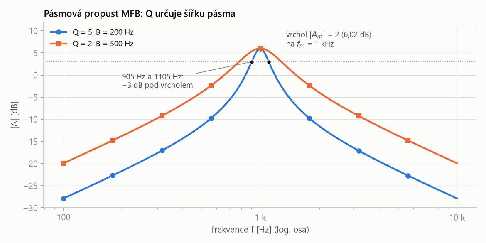
- Vrchol je vždy na \(f_m\) a má stejnou výšku (zisk 2 = 6 dB) – mění se jen šířka. \(Q = 5\): pásmo 200 Hz, \(Q = 2\): 500 Hz.
- Daleko od středu klesá přenos 20 dB/dek na obě strany – pásmová propust 2. řádu je jedna „půlka“ DP a jedna „půlka“ HP.
Pásmová zádrž
Připomenutí ze základů: pasivní pásmová zádrž a dvojitý T-článek
Pásmová zádrž (band-stop filter) je filtr, který potlačuje složky signálu v pásmu frekvencí kolem střední frekvence \(f_0\) a frekvence pod tímto pásmem i nad ním propouští. Úzká pásmová zádrž potlačující jedinou frekvenci se nazývá notch filtr (odlaďovač).
opak pásmové propusti – „vyřízne“ jedno pásmo a vše ostatní nechá. Typické použití: odstranění síťového brumu 50 Hz z EKG nebo EEG.

Horní cesta (R–R, 2C k zemi) je dolní propust a fázi zpožďuje, dolní cesta (C–C, R/2 k zemi) je horní propust a fázi předbíhá. Na frekvenci \(f_0\) jsou oba příspěvky stejně velké a v protifázi, takže se na výstupu odečtou a přenos je teoreticky nulový. (Jiná možnost: DP a HP vedle sebe a sečíst – na rozdíl od pásmové propusti, kde jsou za sebou.)
| \(R, C\) | hodnoty v podélných větvích; příčné prvky mají \(R/2\) a \(2C\) |
Pro 50 Hz a \(C = 100\) nF vyjde \(R \approx 31{,}8\) kΩ. Pasivní článek má ale široký zářez (−3 dB už na 11,8 Hz a 212 Hz) – proto aktivní varianta níže.
Pásmová zádrž vznikne podobnou transformací dolní propusti, jen se pásmo „vyřízne“: přenos má na střední frekvenci \(f_m\) nulu.
- Daleko od \(f_m\) (pod i nad) projde signál beze změny tvaru se ziskem propustného pásma.
- Přímo na \(f_m\) je výstup teoreticky nulový – složka s touto frekvencí (např. brum 50 Hz) zmizí.
- Činitel jakosti \(Q\) (střední frekvence / šířka potlačeného pásma) určuje jen šířku zářezu, ne jeho hloubku ani polohu: velké \(Q\) = úzký zářez, který vezme jen \(f_m\); malé \(Q\) = široký zářez, který ubere i sousední užitečné frekvence.
- Prakticky není zářez nekonečně hluboký – jeho hloubku omezuje přesnost součástek.
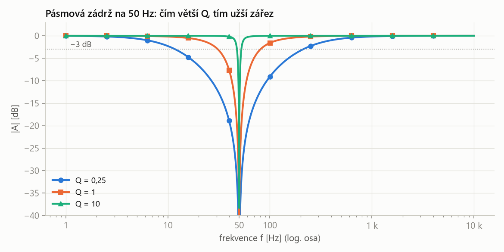
- Na \(f_m\) je přenos teoreticky nulový pro každé \(Q\). \(Q\) určuje jen šířku zářezu: \(Q = 10\) potlačí pásmo 5 Hz, \(Q = 0{,}25\) pásmo 200 Hz.
- Pro odstranění brumu 50 Hz z EKG chceme velké \(Q\) – zářez má vzít 50 Hz a nechat užitečné složky kolem.
Aktivní dvojitý T-článek
Pasivní dvojitý T-článek (připomenutí výše, slide vpravo) má \(f_m = 1/(2\pi RC)\), ale velmi široký zářez (\(Q = 0{,}25\)). Aktivní varianta ze slidu ho doplní OZ.
Aktivní dvojitý T-článek je pásmová zádrž, ve které je výstup dvojitého T-článku připojen na neinvertující zesilovač se ziskem \(G = 1 + R_2/R_1\) a příčný rezistor \(R/2\) není uzemněn, ale připojen na výstup OZ. Činitel jakosti pak závisí na zisku: \(Q = 1/(2(2 - G))\).
stejný T-článek jako pasivní dvojitý T výše, jen jeho „zemní“ rezistor dostává zpět výstupní signál. Tím se zářez zúží – a jak úzký bude, nastavím jedním poměrem rezistorů.
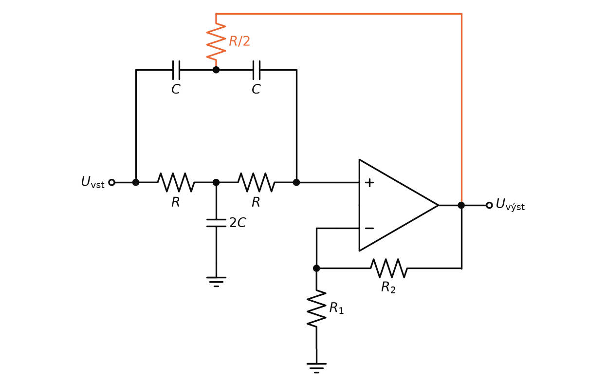
| \(k = G\) | zisk neinvertujícího zesilovače, zároveň zisk v propustném pásmu \(A_0\) |
| \(R\), \(C\) | podélné prvky T-článků; příčné jsou \(R/2\) a \(2C\) |
| \(R_1\), \(R_2\) | dělič zpětné vazby OZ (\(R_1\) na zem, \(R_2\) na výstup) |
| \(Q\) | činitel jakosti; roste, když se \(G\) blíží 2 |
- Vstupní signál jde ke vstupu OZ dvěma cestami: R – R (s \(2C\) dolů) je dolní propust, C – C (s \(R/2\) dolů) je horní propust.
- Na \(f_m = 1/(2\pi RC)\) mají obě cesty stejně velký výstup, ale v opačné fázi – v uzlu na vstupu OZ se odečtou na nulu. Jinde jedna z cest převáží a signál projde.
- Pasivně je zářez široký (\(Q = 0{,}25\)): pokles začíná daleko od \(f_m\) a „ukousne“ i užitečné frekvence.
- Aktivně se příčný rezistor \(R/2\) nepřipojí na zem, ale na výstup OZ. Mimo \(f_m\) výstup vrací do T-článku signál (kladná zpětná vazba) a ten „dorovná“ útlum, který by tam pasivní článek způsobil. Přímo na \(f_m\) je ale výstup nulový, \(R/2\) je tedy jako uzemněný a zářez zůstane. Útlum se tak soustředí jen do úzkého okolí \(f_m\).
- Zisk \(G\) (poměr \(R_2/R_1\)) ovládá jen šířku zářezu: \(G = 1\) (sledovač) dá \(Q = 0{,}5\), \(G = 1{,}9\) dá \(Q = 5\). Střední frekvenci nemění.
- \(R\) a \(C\) T-článku ovládají jen střední frekvenci. Obě veličiny se ladí nezávisle – to je hlavní výhoda zapojení.
- Pro \(G \to 2\) jde \(Q \to \infty\); při \(G \ge 2\) se obvod rozkmitá (kladná zpětná vazba převáží). Velké \(Q\) proto vyžaduje přesné rezistory.
- Hloubku zářezu určuje přesnost T-článku: nedodrží-li se poměry \(R/2\) a \(2C\), obě cesty se přesně neodečtou a na \(f_m\) zbude nenulový přenos.
Wienův-Robinsonův můstek
Wienův-Robinsonův můstek je pásmová zádrž tvořená dvěma děliči ze stejného vstupního napětí: frekvenčně závislým (sériový \(RC\) a paralelní \(RC\)) a odporovým (\(2R_1\) a \(R_1\)). Výstupní napětí se bere mezi středy obou děličů. Na frekvenci \(f_m = 1/(2\pi RC)\) dávají oba děliče třetinu vstupního napětí a výstup je nulový.
dvě „váhy“ vedle sebe. Odporový dělič dá vždy 1/3 vstupu, RC dělič dá 1/3 jen na \(f_m\) – jinde víc nebo méně. Rozdíl mezi nimi je proto nulový právě na \(f_m\).
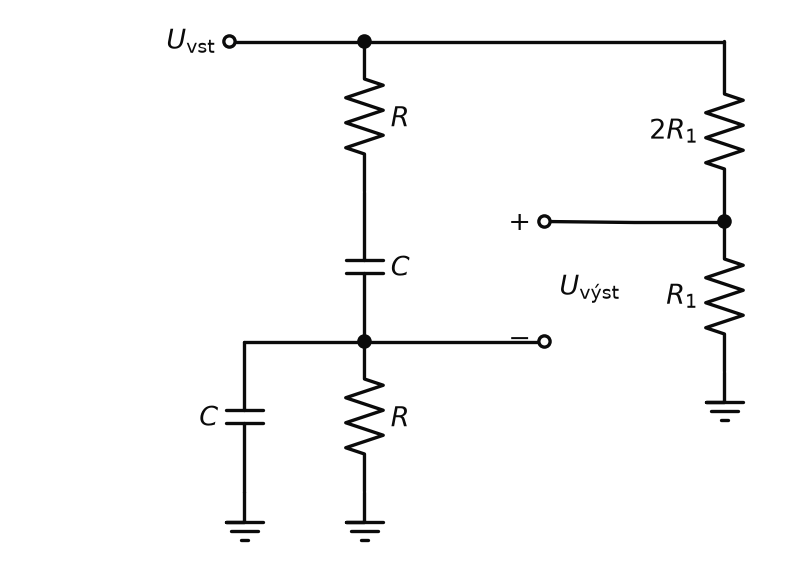
- Pravý (odporový) dělič \(2R_1\) a \(R_1\) dává na každé frekvenci třetinu vstupního napětí, bez fázového posunu.
- Levý (RC) dělič: na nízkých frekvencích blokuje sériový kondenzátor, na vysokých zkratuje paralelní kondenzátor – v obou případech je jeho střed blízko nuly. Mezi tím, právě na \(f_m\), je reaktance kondenzátoru rovna \(R\) a dělič dává také třetinu vstupu a fázové posuny obou větví se vyruší.
- Oba středy jsou tedy na \(f_m\) na stejném napětí ve stejné fázi – rozdíl (výstup) je nulový. Na jiných frekvencích se RC dělič od třetiny odchýlí a výstup nenulový je.
Aktivní zapojení na slidu (vlevo) má dva OZ: první sčítá vstup (přes \(R_4\)) a výstup (přes \(R_3\)) s rezistorem \(R_2\) ve zpětné vazbě a napájí můstek; druhý OZ měří napětí mezi středy obou větví (dělič \(R_1\), \(2R_1\)). Zpětná vazba přes \(R_3\) zužuje zářez.
- Výstup je mimo \(f_m\) invertovaný (zisk je záporný) a na \(f_m\) nulový – stejný zářez jako u ostatních zádrží.
- \(R\), \(C\) můstku určují střední frekvenci: větší \(R\) nebo \(C\) posune zářez k nižším frekvencím.
- \(R_3\) (zpětná vazba z výstupu) určuje šířku zářezu: menší \(R_3\) = silnější zpětná vazba = užší zářez (větší \(Q\)). Bez zpětné vazby je zářez široký jako u pasivního můstku.
- \(R_4\) (vstup) nastaví zisk v propustném pásmu. Protože zisk závisí i na \(R_3\), musí se při zúžení zářezu upravit i \(R_4\), aby výstup zůstal stejně velký.
- Stejně jako u dvojitého T-článku: hloubka zářezu závisí na přesném vyvážení můstku.
Kaskáda filtrů
Kaskáda filtrů je sériové řazení filtračních článků, kdy výstup jednoho článku je vstupem dalšího. Je-li každý článek oddělen OZ (nízký výstupní a vysoký vstupní odpor), přenosy článků se násobí (v dB sčítají) a řády se sčítají.
filtry „za sebou“. Čtyři články 1. řádu dají filtr 4. řádu (80 dB/dek). OZ mezi nimi zajistí, aby se nezatěžovaly – každý článek se pak dá spočítat samostatně.
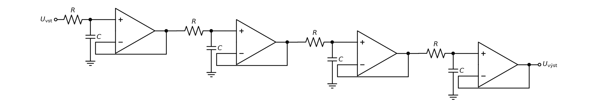
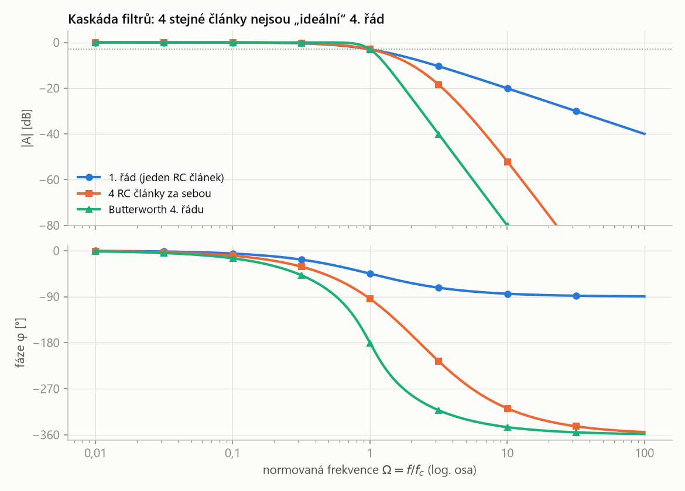
- Kaskáda 4 článků má daleko za zlomem strmost 4. řádu (80 dB/dek) a fázi až −360° (4 × −90°).
- Ohyb je ale pozvolný: na \(\Omega = 2\) je kaskáda jen na −9,8 dB, Butterworth 4. řádu (graf „ideal 4th order“ na slidu se tvarem blíží jemu) už na −24,1 dB; na \(\Omega = 10\) −52,0 dB proti −80,0 dB.
- Dobrý filtr vyššího řádu proto není řada stejných článků, ale kaskáda článků 2. řádu s různými \(a_i\), \(b_i\) podle aproximace.
Má-li každý ze 4 článků mezní frekvenci \(f_c\), je v ní každý na −3,01 dB a celek na \(4 \cdot (-3{,}01) = -12{,}04\) dB. Aby celek měl −3 dB na \(f_c\), musí mít každý článek mezní frekvenci
\[ \frac{f_c}{\sqrt{2^{1/4} - 1}} = 2{,}30\, f_c \](vlastní výpočet, z podmínky \((1 + \Omega^2)^4 = 2\)).
Aproximace filtrů
Aproximace filtru je volba koeficientů přenosové funkce (\(a_i\), \(b_i\)) daného řádu tak, aby se charakteristika co nejvíc přiblížila ideálnímu filtru podle jednoho zvoleného kritéria – plochosti propustného pásma, strmosti přechodu nebo linearity fáze.
ideální filtr postavit nejde, tak si vyberu, v čem se mu má reálný filtr podobat nejvíc. Zapojení zůstane stejné (Sallen-Key, MFB), změní se jen hodnoty součástek.
Butterworthova aproximace
Butterworthův filtr má maximálně plochou amplitudovou charakteristiku v propustném pásmu (bez zvlnění). Dolní propust \(n\)-tého řádu má
\[ |A| = \frac{1}{\sqrt{1 + \Omega^{2n}}} \]
„nejrovnější vršek“: signál v propustném pásmu projde se stejným zesílením, žádná frekvence se nezvýrazní. Proto se podle slidu používá jako antialiasingový filtr pro precizní zpracování signálů.
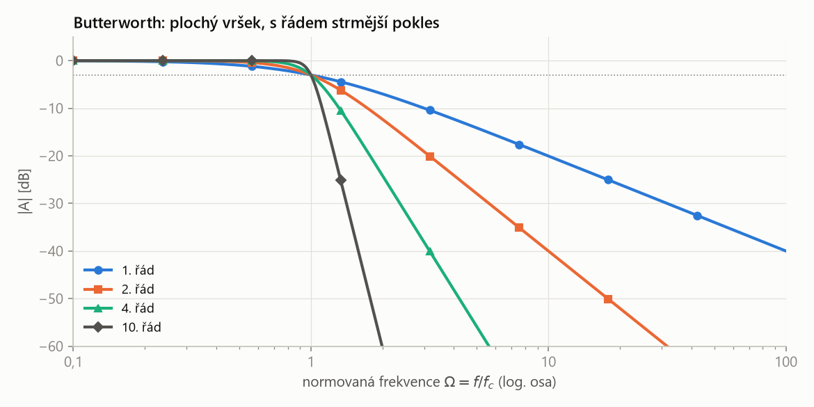
- Všechny řády mají v \(\Omega = 1\) přesně −3 dB a pod ní plochý průběh.
- Vyšší řád = strmější přechod. O oktávu za zlomem (\(\Omega = 2\)): 1. řád −7,0 dB, 2. řád −12,3 dB, 4. řád −24,1 dB, 10. řád −60,2 dB.
Antialiasingový filtr je analogová dolní propust zařazená před A/D převodník, která potlačí složky signálu s frekvencí nad polovinou vzorkovací frekvence, aby se po vzorkování nepřeložily do užitečného pásma (aliasing).
„strážce“ před převodníkem. Co by převodník nedokázal správně navzorkovat, musí se odfiltrovat dřív, než se to stane – digitálně už to opravit nejde. Vzorkování a aliasing patří k přednášce o A/D převodnících.
Čebyševova aproximace
Čebyševův filtr má rychlý pokles útlumu mezi propustným a nepropustným pásmem za cenu zvlnění přenosu ke konci propustného pásma. Velikost zvlnění (např. 3 dB) je parametrem návrhu.
nejstrmější „sráz“ při daném řádu, ale vršek není rovný – v propustném pásmu se zesílení trochu „vlní“.
Besselova aproximace
Besselův filtr má lineární fázi do mezního kmitočtu, tedy konstantní skupinové zpoždění v propustném pásmu. Jeho amplitudová charakteristika má nejpozvolnější přechod ze tří aproximací.
filtr, který nemění tvar signálu: všechny složky v propustném pásmu zpozdí o stejný čas. Hodí se tam, kde záleží na tvaru křivky (např. QRS komplex v EKG) a ne na ostrém oddělení frekvencí.
Skupinové zpoždění je záporná derivace fázové charakteristiky podle úhlové frekvence:
\[ \tau_g = -\frac{d\varphi}{d\omega} \]
Udává, o jakou dobu filtr zpozdí složky signálu kolem frekvence \(\omega\).
je-li fáze lineární (přímka), je \(\tau_g\) konstantní: všechny frekvence dorazí se stejným zpožděním a tvar signálu se zachová. Kde \(\tau_g\) kolísá, se signál „rozmaže“ nebo zakmitá.
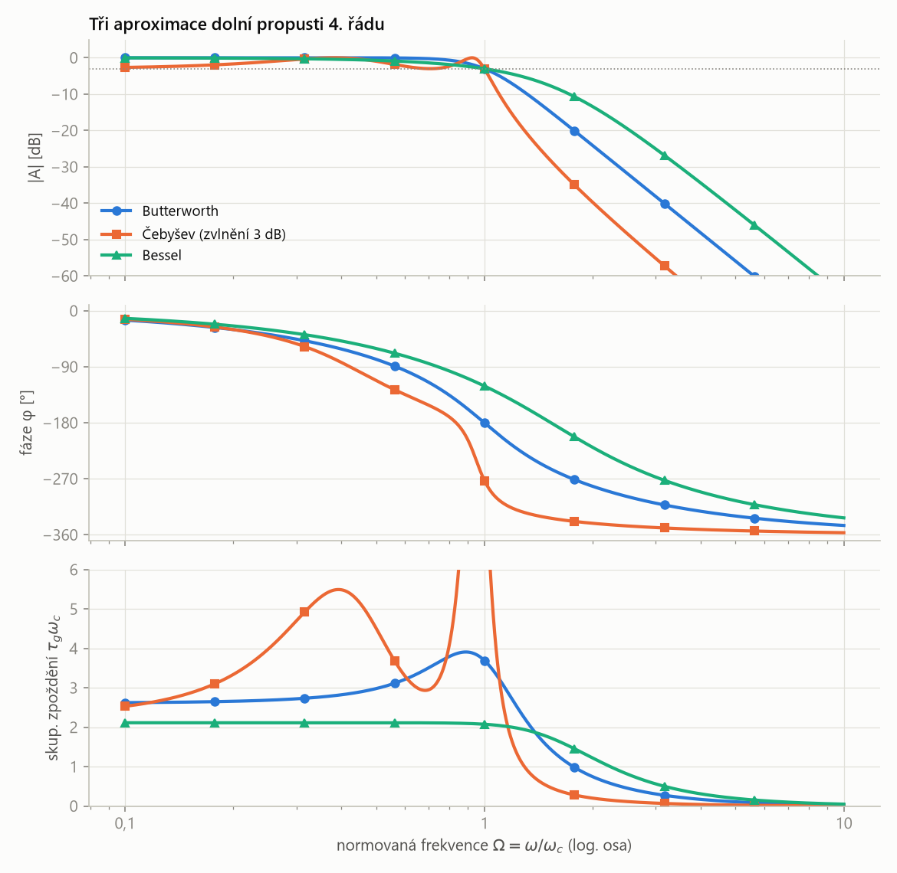
- Amplituda: Čebyšev je za zlomem nejstrmější, ale v propustném pásmu se vlní o 3 dB; Butterworth je plochý; Bessel klesá nejpozvolněji.
- Skupinové zpoždění: Bessel ho má konstantní až k mezní frekvenci (lineární fáze) – tvar signálu se nezkreslí. Čebyšev má u zlomu velkou špičku – signál s ostrými hranami zakmitá.
- Žádná aproximace není nejlepší ve všem: strmost se platí zvlněním nebo nelineární fází.
| aproximace | propustné pásmo | přechod | fáze | použití |
|---|---|---|---|---|
| Butterworth | maximálně ploché | střední | mírně nelineární | antialiasing, precizní zpracování |
| Čebyšev | zvlněné | nejstrmější | nelineární | ostré oddělení pásem |
| Bessel | mírně klesající | nejpozvolnější | lineární do \(f_c\) | zachování tvaru signálu |
Jak správně navrhnout filtr?
Slide doporučuje vyzkoušet nástroj Filter Designer firmy Texas Instruments (webench.ti.com/filter-design-tool). Nástroj podle zadání zvolí aproximaci, rozloží filtr na články 2. řádu a spočítá součástky.
- Typ filtru: DP, HP, PP nebo PZ podle toho, které frekvence propustit.
- Požadavky: mezní (střední) frekvence, zisk, útlum v nepropustném pásmu a šířka přechodové oblasti (\(A_1\), \(A_2\), \(\omega_0\), \(\omega_1\)).
- Aproximace: Butterworth (ploché pásmo), Čebyšev (strmost), Bessel (lineární fáze).
- Řád: tak vysoký, aby strmost (\(n \cdot 20\) dB/dek) splnila útlum.
- Zapojení: Sallen-Key (neinvertující, málo součástek) nebo MFB (invertující, vyšší \(Q\)); filtr vyššího řádu jako kaskáda článků 2. řádu s koeficienty \(a_i\), \(b_i\) z tabulek.
- Součástky: zvolit kondenzátory, dopočítat rezistory ze vzorců pro \(a_i\), \(b_i\).
Ukázka na slidu: pásmová zádrž MFB, Bessel, 10. řád, 5 stupňů (každý stupeň je článek 2. řádu), střední frekvence 50 Hz, ideální OZ, zisk 1 V/V (0 dB), pokles 3 dB na okraji pásma, potlačení −45 dB, šířka propustného pásma 5 Hz, šířka pásma útlumu 1 Hz, povolené zvlnění 1 dB. Výsledek je pět MFB článků za sebou a na konci sčítací zesilovač (OpAmpAdder). Zádrž s takto úzkým zářezem (\(Q = 50/5 = 10\)) by z jednoho článku 2. řádu nevznikla.
Srovnání zapojení
| zapojení | řád, výstup | co ovládá co | poznámka |
|---|---|---|---|
| DP 1. řádu neinv. / inv. | 1; \(1 + R_2/R_3\) / \(-R_2/R_1\) | \(a_1 = \omega_c R_1 C_1\) / \(\omega_c R_2 C_1\) | RC článek + zesilovač |
| HP 1. řádu neinv. / inv. | 1; \(1 + R_2/R_3\) / \(-R_2/R_1\) | \(a_1 = 1/(\omega_c R_1 C_1)\) | R ↔ C proti DP |
| Sallen-Key DP | 2; ve fázi, zisk 1 | velikost R, C → \(f_c\); \(C_2/C_1\) (nebo zisk) → ostrost ohybu | neinvertující, kladná ZV přes \(C_2\) |
| Sallen-Key HP | 2; ve fázi, zisk 1 | velikost R, C → \(f_c\); \(R_1/R_2\) (nebo zisk) → ostrost ohybu | R ↔ C proti DP |
| MFB DP | 2; invertovaný | \(R_2/R_1\) → zisk; \(C_2/C_1\) → ohyb; velikost R, C → \(f_c\) | invertující, dvě ZV |
| MFB HP | 2; invertovaný | poměr kondenzátorů → zisk; velikost R, C → \(f_c\) | R ↔ C proti DP MFB |
| MFB PP | 2; invertovaný, vrchol na \(f_m\) | \(R_2\) → šířka pásma; \(R_1\) → zisk; \(R_3\) → \(f_m\) | jeden OZ = HP i DP |
| dvojitý T aktivní | 2; \(G\) | \(f_m = 1/(2\pi RC)\), \(Q = 1/(2(2-G))\) | \(R/2\) na výstup |
| Wien-Robinson | 2; invertovaný, nula na \(f_m\) | R, C → \(f_m\); \(R_3\) → šířka zářezu; \(R_4\) → zisk | můstek, dva OZ |
„Filtr propouští signál v požadovaném pásmu a ostatní frekvence potlačuje. Popisuje ho přenosová funkce \(H(p)\), podíl dvou polynomů v \(p = j\omega\); její modul je amplitudová a úhel fázová charakteristika. Ideální filtr má přenos 1 v propustném pásmu, nulu za mezní frekvencí a svislou hranu – odpovídá nekonečnému řádu. Reálný filtr má mezi pásmem propustnosti a pásmem útlumu přechodovou oblast; strmost je \(n\) krát 6 dB na oktávu, neboli \(n\) krát 20 dB na dekádu. Pasivní filtry z R, L, C signál vždy zeslabí, aktivní filtry s OZ ho mohou i zesílit, nepotřebují cívky a články se nezatěžují. Základní články 2. řádu jsou Sallen-Key (neinvertující, kladná zpětná vazba přes kondenzátor) a MFB (invertující, dvě zpětné vazby); horní propust vznikne z dolní záměnou R a C. Přenos článku je \(A_0/(1 + a_1 s + b_1 s^2)\) v normované frekvenci \(\Omega = f/f_c\), koeficienty určuje aproximace: Butterworth má maximálně ploché propustné pásmo a používá se jako antialiasingový filtr, Čebyšev má nejstrmější přechod se zvlněním, Bessel lineární fázi. Pásmová propust a zádrž se popisují střední frekvencí a činitelem jakosti \(Q = f_m/B\); zádrž na 50 Hz se dělá např. aktivním dvojitým T-článkem, kde \(Q = 1/(2(2 - G))\). Filtry vyššího řádu jsou kaskádou článků 2. řádu.“
Aktivní filtr = RC články + OZ: zesiluje, nezatěžuje se, článek 2. řádu (Sallen-Key, MFB) dá 40 dB/dek; řád × 20 dB/dek, aproximace (Butterworth / Čebyšev / Bessel) volí mezi plochostí, strmostí a lineární fází, \(Q\) určuje šířku pásmové propusti či zádrže.
Shrnutí
Filtr propouští signál v požadovaném pásmu a potlačuje nežádoucí frekvence. Popisuje ho přenosová funkce \(H(p)\), podíl polynomů v \(p = j\omega\) (\(m \le n\)), v ustáleném stavu modul a fáze. Ideální filtr má přenos 1, svislou hranu v \(\omega_0\) a nulový přenos za ní (\(n \to \infty\)); reálný filtr má pásmo propustnosti, přechodovou oblast a pásmo útlumu, na mezní frekvenci pokles 3 dB a strmost \(n \cdot 6\) dB/okt = \(n \cdot 20\) dB/dek (přepočet \(\log_2 10 \approx 3{,}32\)).
Pasivní filtry (R, L, C) signál vždy zeslabí, ale nejsou omezeny aktivními prvky; aktivní filtry s OZ potřebují napájení, nepotřebují cívky, jsou kompaktní, strmější a mohou zesilovat. Kde se signál zpracovává digitálně, nechává se co nejvíc operací digitální části. Přenos se zapisuje v normované frekvenci \(\Omega = f/f_c\) jako \(A_0 / (1 + a_1 s + b_1 s^2)\) pro DP a \(A_\infty / (1 + a_1/s + b_1/s^2)\) pro HP.
Články 1. řádu jsou RC článek s neinvertujícím (\(A_0 = 1 + R_2/R_3\)) nebo invertujícím (\(A_0 = -R_2/R_1\)) zesilovačem. Články 2. řádu: Sallen-Key (neinvertující, OZ jako sledovač, kladná zpětná vazba) a MFB (invertující, dvě zpětné vazby). Horní propust vznikne z dolní záměnou R a C. Pásmová propust MFB má invertovaný výstup s vrcholem na \(f_m\); \(R_2\) určuje šířku pásma, \(R_1\) zisk a \(R_3\) doladí \(f_m\). Pásmová zádrž má na \(f_m\) nulový výstup a \(Q\) určuje šířku zářezu; aktivní dvojitý T-článek má \(Q = 1/(2(2 - G))\) a \(f_m = 1/(2\pi RC)\), u Wienova-Robinsonova můstku zužuje zářez zpětná vazba přes \(R_3\).
Filtr vyššího řádu je kaskáda článků; stejné články dají pozvolný ohyb, proto se koeficienty volí podle aproximace: Butterworth (maximálně ploché pásmo, antialiasing), Čebyšev (rychlý pokles, zvlnění), Bessel (lineární fáze, konstantní skupinové zpoždění). Návrh usnadní nástroj TI Filter Designer.
Take-home messages
- Přenosová funkce \(H(p)\) = podíl polynomů v \(p = j\omega\); modul = amplitudová, úhel = fázová charakteristika.
- Ideální filtr: \(A = 1\), svislá hrana, \(n \to \infty\). Reálný: pásmo propustnosti, přechodová oblast, pásmo útlumu.
- Strmost \(n \cdot 6\) dB/okt = \(n \cdot 20\) dB/dek; \(A_\text{dek} \approx 3{,}32 \cdot A_\text{okt}\); na mezní frekvenci −3 dB.
- Pasivní filtr signál vždy zeslabí; aktivní (OZ) může zesilovat, nepotřebuje cívky, potřebuje napájení.
- Normovaný článek: DP \(A_0/(1 + a_1 s + b_1 s^2)\), HP \(s \to 1/s\) = záměna R a C.
- Sallen-Key = neinvertující, kladná zpětná vazba; MFB = invertující, dvě zpětné vazby.
- Pásmová propust a zádrž: \(Q = f_m/B = 1/\Delta\Omega\); zádrž 50 Hz aktivním dvojitým T (\(Q = 1/(2(2-G))\)) nebo Wienovým-Robinsonovým můstkem.
- Butterworth: ploché pásmo (antialiasing); Čebyšev: strmost se zvlněním; Bessel: lineární fáze. Vyšší řád = kaskáda článků 2. řádu.
Otázky ke zkoušce
Jak se obecně popisuje přenos filtru? Čím se liší ideální a reálný filtr?
Přenosovou funkcí – podílem výstupního a vstupního napětí, obecně podílem dvou polynomů v \(p = j\omega\):
\[ H(p) = \frac{c_m p^m + \dots + c_0}{b_n p^n + \dots + b_0}, \qquad m \le n \]V ustáleném stavu \(\bar H(j\omega) = |\bar H(j\omega)| \cdot e^{j\varphi(\omega)}\): modul je amplitudová a \(\varphi\) fázová charakteristika. Ideální filtr má v propustném pásmu přenos 1, na mezní frekvenci absolutní strmost a za ní nulový přenos – odpovídá řádu \(n \to \infty\). Reálný filtr má pásmo propustnosti (přenos \(\cong 1\)), přechodovou oblast bez absolutní strmosti a pásmo útlumu; v mezní frekvenci klesne o 3 dB a pak klesá strmostí danou řádem (prakticky \(n\) = 2 až 10).
Co znamená strmost v dB/oktávu a v dB/dekádu a jak se převádí? Kolik dB ztratí HP 1. řádu s \(f_M\) = 1,8 kHz na 900 Hz a na 180 Hz?
Oktáva je dvojnásobná nebo poloviční frekvence, dekáda desetinásobná nebo desetinová. Strmost udává, o kolik dB se změní přenos v nepropustném pásmu na oktávu, resp. dekádu. Filtr \(n\)-tého řádu má \(n \cdot 6\) dB/okt = \(n \cdot 20\) dB/dek. Převod:
\[ A_\text{dek} = \log_2 10 \cdot A_\text{okt} \approx 3{,}3219 \cdot A_\text{okt} \]takže 6 dB/okt ≈ 19,93 ≈ 20 dB/dek. HP 1. řádu s \(f_M\) = 1,8 kHz: na 900 Hz (oktáva) −6,99 dB, na 180 Hz (dekáda) −20,04 dB; v samotné \(f_M\) −3 dB.
Porovnejte pasivní a aktivní filtry. Proč se u zařízení s digitálním zpracováním nechává co nejvíc filtrace digitální části?
Pasivní filtr je z R, L, C (aspoň jeden reaktanční prvek), nepotřebuje napájení, má teoreticky neomezený frekvenční rozsah, ale vždy snižuje amplitudu signálu a pro strmé charakteristiky potřebuje cívky. Aktivní filtr přidá OZ: potřebuje napájení \(\pm U_{CC}\), nepotřebuje induktory (stačí RC), je kompaktnější, umožňuje strmější charakteristiku a signál může současně zesilovat; frekvenční rozsah omezuje OZ. Analogové filtry nemohou být ideální a jejich návrh optimalizuje jen jedno kritérium; digitální zpracování je přesnější a pružnější, proto se analogově dělá jen nutné minimum (antialiasingová filtrace).
Nakreslete dolní propust Sallen-Key a vysvětlete, jak funguje. Co ovlivní mezní frekvenci a tvar ohybu? Jak z ní vznikne horní propust?
Vstup přes \(R_1\) a \(R_2\) v sérii na neinvertující vstup OZ, z něj \(C_1\) na zem; z uzlu mezi \(R_1\) a \(R_2\) vede \(C_2\) na výstup; OZ je sledovač. Na nízkých frekvencích signál projde beze změny (zisk 1, ve fázi), na vysokých ho \(C_1\) svede na zem a výstup klesá 40 dB/dek. Kolem mezní frekvence vrací výstup přes \(C_2\) signál do uzlu (kladná zpětná vazba) a ohyb se zostří.
- Větší všechny R nebo C → nižší mezní frekvence, stejný tvar.
- Větší \(C_2\) proti \(C_1\) → ostřejší ohyb, případně převýšení; Butterworth pro \(C_2 = 2C_1\).
- Ve variantě se ziskem: větší zisk → větší výstup a zároveň ostřejší ohyb; při zisku 3 a víc obvod kmitá.
Horní propust vznikne záměnou rezistorů za kondenzátory a naopak: dva kondenzátory \(C\) v sérii, \(R_1\) na zem, \(R_2\) na výstup. Pak propouští vysoké frekvence a potlačuje nízké.
Čím se liší zapojení Sallen-Key a MFB? Nakreslete dolní propust MFB a popište, jak se změní výstup při změně součástek.
Sallen-Key používá OZ v neinvertujícím zapojení (sledovač), výstup je ve fázi se vstupem a zpětná vazba přes kondenzátor (u DP) je kladná. MFB (Multiple FeedBack) používá OZ v invertujícím zapojení se dvěma zpětnými vazbami; výstup je otočený o 180°, zisk se nastaví poměrem rezistorů, zapojení je méně citlivé na tolerance a hodí se i pro vysoké \(Q\). DP MFB: vstup přes \(R_1\) do uzlu, z uzlu \(C_2\) na zem, \(R_3\) na invertující vstup a \(R_2\) na výstup; mezi invertujícím vstupem a výstupem \(C_1\); neinvertující vstup na zemi.
- Menší \(R_1\) nebo větší \(R_2\) → větší výstup (zisk).
- Větší \(C_2\) proti \(C_1\) → ostřejší ohyb.
- Větší všechny R nebo C → nižší mezní frekvence.
Co je činitel jakosti Q? Vysvětlete, jak funguje pásmová propust MFB a co v ní ovládají jednotlivé rezistory.
\(Q = f_m / B = 1/\Delta\Omega\) – poměr střední frekvence a šířky pásma; velké \(Q\) = úzké pásmo. U DP/HP 2. řádu \(Q = \sqrt{b_1}/a_1\) určuje tvar ohybu (Butterworth 0,71).
Pásmová propust MFB: vstup přes \(R_1\) do uzlu, z něj \(R_3\) na zem a dva stejné kondenzátory \(C\) – jeden na invertující vstup, druhý na výstup; \(R_2\) mezi invertujícím vstupem a výstupem. Na nízkých frekvencích kondenzátor k OZ signál nepropustí, na vysokých kondenzátory spojí uzel s výstupem a virtuální zemí – výstup je v obou případech nulový, propustí se jen pásmo kolem \(f_m\).
- \(R_2\) určuje šířku pásma, a tím \(Q\) – větší \(R_2\) = užší pásmo (a větší zisk);
- \(R_1\) určuje zisk – menší \(R_1\) = větší výstup na \(f_m\);
- \(R_3\) doladí střední frekvenci, aniž by změnil zisk a šířku pásma;
- výstup je na \(f_m\) invertovaný.
Jak potlačíte síťový brum 50 Hz aktivní pásmovou zádrží? Vysvětlete princip dvojitého T-článku a roli zisku G.
Pásmová zádrž propustí všechno kromě úzkého pásma kolem střední frekvence, kde je výstup nulový; \(Q\) určuje šířku zářezu. Dvojitý T-článek má dvě cesty: \(R\)–\(R\) s \(2C\) na zem (dolní propust) a \(C\)–\(C\) s \(R/2\) (horní propust). Na \(f_m\) dávají stejně velký signál v opačné fázi a odečtou se na nulu.
\[ f_m = \frac{1}{2\pi RC}, \qquad Q = \frac{1}{2(2 - G)} \]Pasivní článek má široký zářez (\(Q = 0{,}25\)) a ubere i užitečné frekvence kolem 50 Hz. V aktivní variantě je \(R/2\) připojen na výstup neinvertujícího zesilovače \(G = 1 + R_2/R_1\); zpětná vazba mimo \(f_m\) útlum vyrovná a zářez se zúží. Čím blíž je \(G\) dvěma, tím užší zářez (např. \(G = 1{,}9\) → \(Q = 5\)); při \(G \ge 2\) obvod kmitá. \(G\) mění jen šířku, \(R\) a \(C\) jen střední frekvenci. Alternativa: Wienův-Robinsonův můstek – na \(f_m\) jsou oba děliče vyvážené a výstup nulový, zářez zužuje zpětná vazba přes \(R_3\).
Porovnejte Butterworthovu, Čebyševovu a Besselovu aproximaci. Proč filtr 4. řádu nestačí poskládat ze čtyř stejných RC článků?
Aproximace volí koeficienty \(a_i\), \(b_i\) podle jednoho kritéria. Butterworth má maximálně plochou charakteristiku v propustném pásmu, \(|A| = 1/\sqrt{1 + \Omega^{2n}}\), používá se jako antialiasingový filtr. Čebyšev má nejrychlejší pokles mezi propustným a nepropustným pásmem, ale zvlnění přenosu ke konci propustného pásma. Bessel má lineární fázi (konstantní skupinové zpoždění) do mezního kmitočtu, signál nezkreslí, ale přechod je nejpozvolnější.
Kaskáda čtyř stejných RC článků (oddělených sledovači) má sice daleko za zlomem 80 dB/dek, ale velmi pozvolný ohyb: na \(\Omega = 2\) jen −9,8 dB proti −24,1 dB Butterwortha 4. řádu. Navíc stejné články se v mezní frekvenci sečtou na −12 dB, takže se mezní frekvence posune. Správný filtr vyššího řádu je kaskáda článků 2. řádu s různými koeficienty podle aproximace.